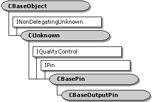

description: The CBaseOutputPin class is an abstract base class that implements an output pin. ms.assetid: 5279c8aa-6ec0-4a89-a1b3-6904d7b69a93 title: CBaseOutputPin class (Amfilter.h) ms.topic: reference ms.date: 4/26/2023 topic_type:
[The feature associated with this page, DirectShow, is a legacy feature. It has been superseded by MediaPlayer, IMFMediaEngine, and Audio/Video Capture in Media Foundation. Those features have been optimized for Windows 10 and Windows 11. Microsoft strongly recommends that new code use MediaPlayer, IMFMediaEngine and Audio/Video Capture in Media Foundation instead of DirectShow, when possible. Microsoft suggests that existing code that uses the legacy APIs be rewritten to use the new APIs if possible.]

The CBaseOutputPin class is an abstract base class that implements an output pin.
This class derives from CBasePin. It differs from CBasePin in the following respects:
When the pin connects, it requests a memory allocator from the input pin. Failing that, it creates a new allocator object. The output pin is responsible for setting the allocator properties. It does this through the pure virtual method CBaseOutputPin::DecideBufferSize. Override this method in your derived class. If the input pin has any buffer requirements, they are passed to the DecideBufferSize method.
Call the CBaseOutputPin::GetDeliveryBuffer method to obtain an empty media sample. Call the CBaseOutputPin::Deliver method to deliver samples downstream.
Your derived class must override the pure virtual CBasePin::CheckMediaType method to validate the media type during pin connections.
| Protected Member Variables | Description |
|---|---|
| m_pAllocator | Pointer to the memory allocator. |
| m_pInputPin | Pointer to the input pin connected to this pin. |
| Public Methods | Description |
| CBaseOutputPin | Constructor method. |
| CompleteConnect | Completes a connection to an input pin. Virtual. |
| DecideAllocator | Selects a memory allocator. Virtual. |
| GetDeliveryBuffer | Retrieves a media sample that contains an empty buffer. Virtual. |
| Deliver | Delivers a media sample to the connected input pin. Virtual. |
| InitAllocator | Creates a memory allocator. Virtual. |
| CheckConnect | Determines whether a pin connection is suitable. |
| BreakConnect | Releases the pin from a connection. |
| Active | Notifies the pin that the filter is now active. |
| Inactive | Notifies the pin that the filter is no longer active. |
| DeliverEndOfStream | Delivers an end-of-stream notification to the connected input pin.Virtual. |
| DeliverBeginFlush | Requests the connected input pin to begin a flush operation. Virtual. |
| DeliverEndFlush | Requests the connected input pin to end a flush operation. Virtual. |
| DeliverNewSegment | Delivers a new-segment notification to the connected input pin. Virtual. |
| Pure Virtual Methods | Description |
| DecideBufferSize | Sets the buffer requirements. |
| IPin Methods | Description |
| BeginFlush | Begins a flush operation. |
| EndFlush | Ends a flush operation. |
| EndOfStream | Notifies the pin that no additional data is expected. |
| Requirement | Value |
|---|---|
| Header | Amfilter.h (include Streams.h) |
| Library | Strmbase.lib (retail builds); Strmbasd.lib (debug builds) |